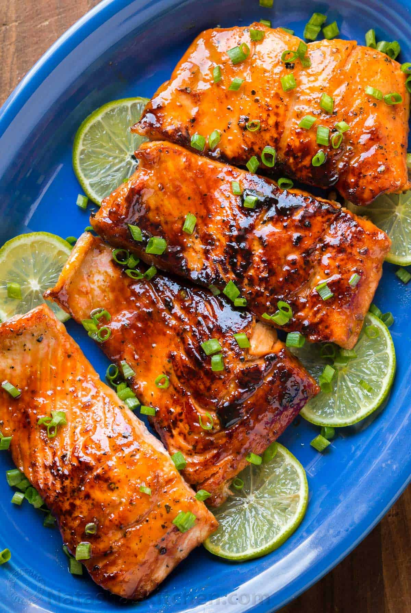

Honey Baked Salmon

A delicious 4-ingredient honey garlic butter sauce is baked with a whole
side of salmon, wrapped in foil, baked and broiled (or grilled) for
that extra golden, crispy, caramelised and flakey finish!
The BEST Salmon In Foil IS RIGHT HERE!
So simple with minimal mess to clean up!
Ingredients
- 1/4 cup butter
- 1/3 cup honey
- 4 large cloves garlic , crushed
- 2 tablespoons fresh lemon juice (juice of 1/2 a lemon)
- 1.2 kg | 2 1/2 pound side of salmon
- Sea salt , to taste
- Cracked pepper , to taste (optional)
- Lemon slices (to serve)
- 2 tablespoons fresh chopped parsley
Instructions
- Position a rack in the middle of the oven. Preheat oven to 375°F | 190°C.
Line a baking tray / sheet
with a large piece of foil, big enough to fold over and seal
to create a packet (or 2 long pieces of
foil over lapping each other lengthways to create your salmon packet,
depending on the width of your fillet).
- In a small saucepan, melt the butter over low-medium heat. Add the honey, garlic and lemon, and
whisk until the honey has melted through the butter and the mixture is well combined.
- Place the salmon onto lined baking tray | sheet. Pour the butter/honey mixture over
the salmon, and using a pastry brush or spoon, spread evenly over the salmon. Sprinkle with
a good amount of salt (about 2 teaspoons) and cracked pepper.
Fold the sides of the foil over
the salmon to cover and completely seal the packet closed so the butter does not leak.
- Bake until cooked through (about 15-18 minutes, depending on the thickness of your fish and your
preference of doneness). Open the foil, being careful of any escaping steam,
and grill / broil under
the grill / broiler for 2-3 minutes on medium heat to caramelise the top.
Garnish with parsley and
serve immediately with lemon slices.
Return to Odin's Favorite Recipes